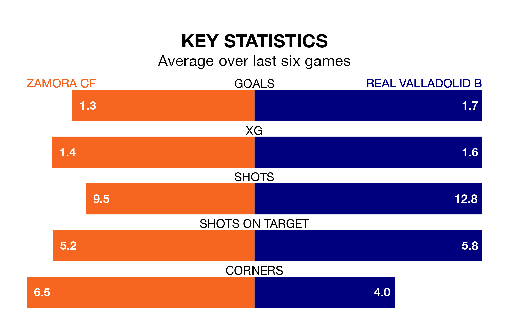

Zamora CF face Real Valladolid B on Sunday seeking to protect their long unbeaten run in the Segunda División RFEF Group 1.
Zamora are unbeaten in five, with two wins and three draws, ahead of the 5pm kick-off.
They face a Valladolid B team who have won two and drawn one over the same number of games.
With 37 goals in 30 games so far this season, Valladolid B are scoring more than average in the league with 1.2 goals per game. But they are conceding more than average too, letting in 49 goals at a rate of 1.6 per game.
Zamora are also above average scorers, with 1.2 goals per game, compared to a league average of 1.1. They have conceded 0.5 goals per game.
The home team are third in the table after 30 games, of which they have won 16 and drawn 10, earning 58 points.
The visitors are seven places behind Zamora in 10th, with 10 wins and seven draws putting them on 37 points.
In the last 10 years, Zamora and Valladolid B have played each other on nine occasions. Zamora won four of them and Valladolid B five.
On average, Zamora scored 1.2 goals and Valladolid B 1.7 in those matches.
Their last meeting was on December 2, when Valladolid B won 2-1 at home.
Zamora's last match was on April 6, a 0-0 draw against Racing Santander B.
Valladolid B beat Gimnástica Torrelavega 3-1 last time out, on April 7, with Manuel Pozo Guerrero (two) and Alberto Miguel Quintana Moreno on the scoresheet.
Updated: 11:20 (UTC), 09/04/24